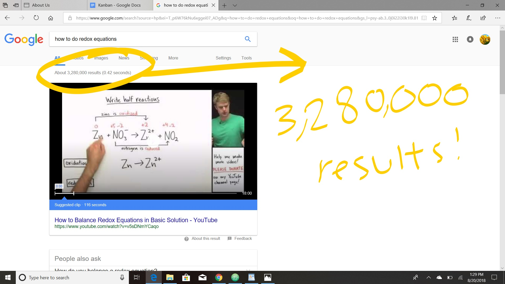

ABOUT US:

Qing:
I am a rising high school junior from Medford, Massachusetts.
I enjoy folding origami, playing the violin, and listening to summer thunderstorms while hiding in the house.
Samourra:
I am a rising high school junior from Brockton, Massachusetts.
I enjoy reading, watching crime documentaries, and creating lists.
Olivia:
I am a rising high school junior from Quincy, Massachusetts.
I enjoy coding, fun facts, and reading.
Our Project
The three of us are all high school students, and we understand the struggles of trying to find reliable resources to use while researching for a project or just for studying. The purpose of making this website is to provide high school students with a list of reliable resources to use, whether to study for a test or exam, to learn something by themselves, or to prepare for the SAT; we make it simple for students to find what they want without the endless results in the Google (or Bing) search page.
